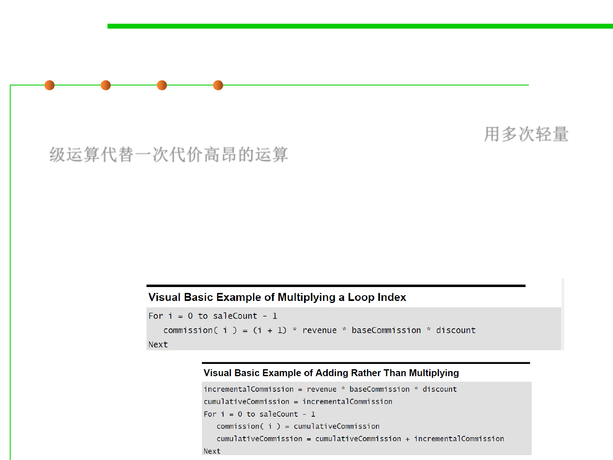

8.3 Code Tuning for Performance Optimization
Strength Reduct—削减强度
▪ Reducing strength means replacing an expensive operation such as
multiplication with a cheaper operation such as addition. 用多次轻量
级运算代替一次代价高昂的运算
▪ Sometimes you’ll have an expression inside a loop that depends on
multiplying the loop index by a factor. Addition is usually faster
than multiplication, and if you can compute the same number by
adding the amount on each iteration of the loop rather than by
multiplying, the code will run faster.